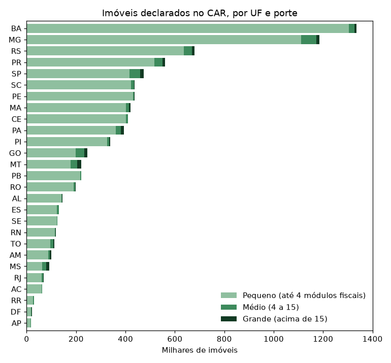
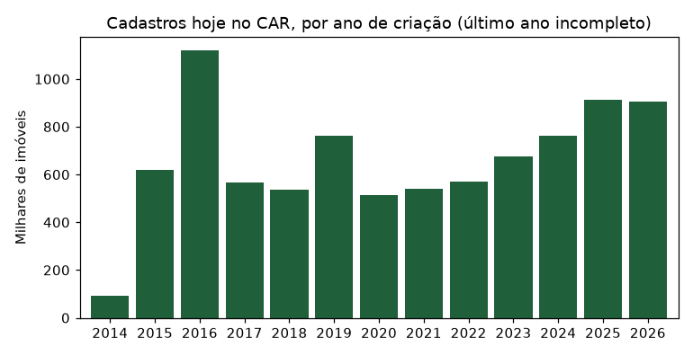
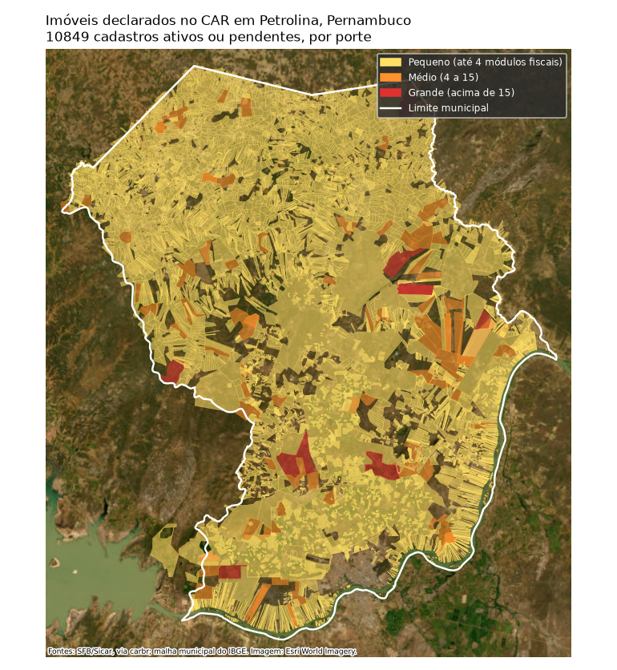

Primeiros passos¶
O Cadastro Ambiental Rural (CAR) é o registro público eletrônico dos imóveis
rurais do país, criado pelo Código Florestal (Lei nº 12.651/2012) e mantido no Sicar
pelo Serviço Florestal Brasileiro. O carbr lê uma republicação dos dados públicos
do cadastro em GeoParquet, com as 27 UFs e cerca de 8,6 milhões de imóveis. Cada
consulta transfere só os trechos do arquivo de que precisa, sem baixar a base de um
estado inteiro e sem passar pelos servidores do Sicar.
| Função | Para quê |
|---|---|
car_catalog() |
O que está publicado |
car_dictionary() |
O que cada coluna significa |
car_summary() |
Totais pré-calculados, do estado ou do país |
car_municipalities() |
Resumo por município |
car_properties() |
Imóveis de uma UF, com filtros |
car_property() |
Um imóvel pelo código |
car_at() |
Imóveis que contêm um ponto |
car_tbl() |
Relação preguiçosa do DuckDB |
car_cite() |
Como citar |
O que está publicado¶
car_catalog() traz uma linha por UF, com o número de imóveis e os indicadores de
qualidade da carga. A versão é a data da última atualização da publicação.
import carbr
cat = carbr.car_catalog()
print(cat.attrs["version"], "-", len(cat), "UFs,", cat["properties"].sum(), "imóveis")
cat.head(6)
2026-11-25 - 27 UFs, 8578061 imóveis
state properties municipalities invalid_geometries null_geometries \
0 AC 63349 22 19 0
1 AL 143973 102 19 0
2 AM 99056 62 94 0
3 AP 17834 16 2 0
4 BA 1334593 416 2 0
5 CE 410650 184 56 0
registered_in_other_state
0 0
1 5
2 0
3 0
4 1
5 3
O dicionário de dados diz o que é cada coluna e qual era o seu nome no Sicar.
print(carbr.car_dictionary().to_string(index=False))
column sicar_name description
property_code cod_imovel Código do imóvel no CAR (UF-município IBGE-identificador).
status_code status_imovel Situação do cadastro: AT ativo, PE pendente, SU suspenso, CA cancelado.
status NaN Situação do cadastro por extenso, derivada de status_code.
condition condicao Etapa da análise em que o cadastro está, como informada pelo Sicar.
property_type_code tipo_imovel IRU imóvel rural, AST assentamento, PCT povos e comunidades tradicionais.
property_type NaN Tipo do imóvel por extenso, derivado de property_type_code.
created_at dat_criacao Data e hora de criação do cadastro (UTC).
area_ha area Área declarada do imóvel, em hectares.
fiscal_modules m_fiscal Área em módulos fiscais do município.
size_class NaN small até 4 módulos fiscais, medium acima de 4 até 15, large acima de 15.
state uf UF onde o imóvel está localizado.
municipality municipio Município onde o imóvel está localizado.
municipality_code cod_municipio_ibge Código IBGE do município (7 dígitos).
registration_state NaN UF do prefixo de property_code; pode diferir de state.
lon NaN Longitude de um ponto dentro do imóvel (SIRGAS 2000).
lat NaN Latitude de um ponto dentro do imóvel (SIRGAS 2000).
geometry_valid NaN Se a geometria declarada é válida (sem autointerseção etc.).
xmin NaN Limite oeste do retângulo envolvente do imóvel, para filtro espacial na leitura.
ymin NaN Limite sul do retângulo envolvente.
xmax NaN Limite leste do retângulo envolvente.
ymax NaN Limite norte do retângulo envolvente.
geometry geo_area_imovel Perímetro declarado do imóvel, WKB, EPSG:4674. Nulo se o Sicar não traz.
O país inteiro, sem ler os imóveis¶
car_summary() lê tabelas pequenas, calculadas na publicação, com a contagem de
imóveis e a área declarada por UF, situação, porte, tipo, etapa da análise e ano de
criação do cadastro. O argumento by escolhe as dimensões; None dá o total.
print(carbr.car_summary(None))
carbr.car_summary("size_class")
properties area_ha
0 8578061 8.161304e+08
size_class properties area_ha
0 large 142974 4.105518e+08
1 medium 398351 1.339702e+08
2 small 8036736 2.716083e+08
Os pequenos imóveis, de até quatro módulos fiscais, são mais de nove em cada dez cadastros e um terço da área declarada. Por UF:
by_state = carbr.car_summary(["state", "size_class"])
wide = by_state.pivot(index="state", columns="size_class", values="properties").fillna(0)
wide = wide.loc[wide.sum(axis=1).sort_values().index, ["small", "medium", "large"]] / 1e3
wide.columns = ["Pequeno (até 4 módulos fiscais)", "Médio (4 a 15)", "Grande (acima de 15)"]
ax = wide.plot.barh(stacked=True, figsize=(7, 6.5), width=0.8,
color=["#8fbf9f", "#3d8a5c", "#123a23"])
ax.set_title("Imóveis declarados no CAR, por UF e porte")
ax.set_xlabel("Milhares de imóveis")
ax.set_ylabel("")
ax.legend(frameon=False, loc="lower right")
fig("estados")

A etapa da análise mostra onde o cadastro está parado:
cond = carbr.car_summary("condition").sort_values("properties", ascending=False)
cond["share"] = (100 * cond["properties"] / cond["properties"].sum()).round(1)
print(cond[["condition", "properties", "share"]].head(8).to_string(index=False))
condition properties share
Aguardando análise 5978543 69.7
Analisado, aguardando atendimento a notificação 1309315 15.3
Analisado, em conformidade com a Lei nº 12.651/2012 460502 5.4
Analisado, em conformidade com a Lei nº 12.651/2012, com ativos ambientais 191767 2.2
Analisado, aguardando regularização ambiental (Lei nº 12.651/2012) 189447 2.2
Cancelado por decisão administrativa 161970 1.9
Aguardando análise, após revisão ou atendimento da notificação 134338 1.6
Em análise 109335 1.3
E o ano de criação dá a linha do tempo do cadastramento:
years = carbr.car_summary("created_year")
ax = (years.set_index("created_year")["properties"] / 1e3).plot.bar(
figsize=(7, 3.6), color="#1f5f3a", width=0.85, rot=0)
ax.set_title("Cadastros hoje no CAR, por ano de criação (último ano incompleto)")
ax.set_xlabel("")
ax.set_ylabel("Milhares de imóveis")
fig("anos")

As dimensões combinam, e state restringe a uma ou mais UFs:
carbr.car_summary(["status", "size_class"], state=["PE", "BA"])
status size_class properties area_ha
0 active large 8236 1.551131e+07
1 active medium 27968 9.622438e+06
2 active small 1725262 2.374194e+07
3 cancelled large 164 7.603320e+05
4 cancelled medium 250 9.443897e+04
5 cancelled small 4541 2.322470e+05
6 pending large 222 4.876561e+05
7 pending medium 420 1.372095e+05
8 pending small 3669 8.763069e+04
9 suspended large 13 6.799360e+04
10 suspended medium 8 2.958711e+03
11 suspended small 30 2.372574e+03
Resumo por município¶
O resumo municipal também é pré-calculado. Sem argumento, traz os municípios de todas as UFs.
mun = carbr.car_municipalities()
mun.sort_values("properties", ascending=False)[
["state", "municipality", "properties", "small_properties", "area_ha", "pending"]
].head(6)
state municipality properties small_properties area_ha pending
16 RO Porto Velho 25819 24145 3.296893e+06 5446
2083 BA Monte Santo 24609 24541 1.889741e+05 0
5563 DF Brasília 21049 17597 1.202233e+06 135
2122 BA Pilão Arcado 16403 16241 1.061906e+06 1
1476 PE Araripina 15663 15625 1.874233e+05 1
1951 BA Euclides da Cunha 14962 14892 1.357437e+05 44
Imóveis de um município¶
car_properties() traz os imóveis de uma UF, com filtros aplicados antes da leitura:
só os trechos do arquivo que atendem ao filtro são transferidos. Aqui, todos os
imóveis de Petrolina, em Pernambuco — cerca de 11 mil, de um arquivo estadual com mais
de 400 mil. Com o extra geo instalado, o resultado é um GeoDataFrame em SIRGAS 2000.
petrolina = carbr.car_properties("PE", municipality="Petrolina")
petrolina[["property_code", "status", "area_ha", "fiscal_modules", "size_class"]].head(6)
property_code status area_ha fiscal_modules size_class
0 PE-2611101-0D7CB5B3271D4C10BB99569D4857BA39 active 52.8957 0.9617 small
1 PE-2611101-111805B2DFBA4AF7B2BE2458D8CE27FD active 652.4604 11.6057 medium
2 PE-2611101-4E7C9A07F92E4181A8CD600ECAE54DDF active 2.8515 0.0518 small
3 PE-2611101-328696C6E5DD436D9AAB872A359C600A active 40.9305 0.7385 small
4 PE-2611101-D0361CB6B3964A1781A0D7E4C507D83C active 2.5074 0.0456 small
5 PE-2611101-F180E6F04B0B4F39A28C791C4F1BECE8 active 9.6502 0.1755 small
Sobre uma imagem de satélite, o cadastro mostra a ocupação do município: os lotes
estreitos dos perímetros irrigados junto ao rio São Francisco, ao sul e a leste, e os
imóveis maiores da caatinga, ao norte. O limite municipal é da malha do IBGE, lida
direto da API de malhas; o fundo vem do pacote contextily.
import contextily as ctx
import geopandas as gpd
from matplotlib.lines import Line2D
from matplotlib.patches import Patch
boundary = gpd.read_file(
"https://servicodados.ibge.gov.br/api/v3/malhas/municipios/2611101"
"?formato=application/vnd.geo%2Bjson&qualidade=maxima"
).set_crs(4674, allow_override=True)
valid = petrolina[petrolina["geometry_valid"] & (petrolina["status"] != "cancelled")]
valid = valid.sort_values("area_ha", ascending=False)
colors = {"small": "#ffe066", "medium": "#ff922b", "large": "#e03131"}
labels = {"small": "Pequeno (até 4 módulos fiscais)", "medium": "Médio (4 a 15)",
"large": "Grande (acima de 15)"}
ax = valid.plot(color=valid["size_class"].map(colors), edgecolor=valid["size_class"].map(colors),
linewidth=0.3, alpha=0.55, figsize=(7, 7.6))
boundary.boundary.plot(ax=ax, color="white", linewidth=1.6)
ax.margins(0.03)
ctx.add_basemap(ax, crs=valid.crs, source=ctx.providers.Esri.WorldImagery, zoom=10,
attribution="Fontes: SFB/Sicar, via carbr; malha municipal do IBGE. Imagem: Esri World Imagery.",
attribution_size=6)
handles = [Patch(color=colors[k], label=labels[k]) for k in colors]
handles.append(Line2D([], [], color="white", linewidth=1.6, label="Limite municipal"))
ax.legend(handles=handles, facecolor="#2b2b2b", labelcolor="white",
loc="upper right", fontsize=8, framealpha=0.85)
ax.set_title(f"Imóveis declarados no CAR em Petrolina, Pernambuco\n"
f"{len(valid)} cadastros ativos ou pendentes, por porte", loc="left", fontsize=11)
ax.set_axis_off()
fig("mapa-petrolina")

Os filtros combinam. Só os imóveis grandes com cadastro ativo:
large = carbr.car_properties(
"PE", municipality="Petrolina", size_class="large", status="active", geometry=False
)
large.sort_values("area_ha", ascending=False)[
["property_code", "area_ha", "fiscal_modules", "condition"]
]
property_code area_ha fiscal_modules condition
6 PE-2611101-1D0D47540B264F2183AE47FFF23F1354 1820.1678 33.0940 Aguardando análise
7 PE-2611101-F9DE04E8745149E5B3557922FB5DD40D 1595.1267 29.0023 Aguardando análise
8 PE-2611101-E4D25AC2FB254BD0B3A29678D08F9C0E 1281.4753 23.2996 Aguardando análise
4 PE-2611101-C52BB95C85E24595B8392A28CB190C13 1037.1799 18.8578 Aguardando análise
9 PE-2611101-9FB673F34F904B3B951BD4DD2E7AFB18 1025.5740 18.6468 Aguardando análise
1 PE-2611101-F2B10E8F0D7749A89200B1B538FBAE86 1023.6300 18.6115 Aguardando análise
3 PE-2611101-6BEF7820114C4BE99B3974A937409469 995.5764 18.1014 Aguardando análise
2 PE-2611101-A0DF298BDC7C48ACB976417AA75C9050 994.5673 18.0830 Aguardando análise
0 PE-2611101-A94CA3B342CF444CBCB9C558E9A7CAFC 843.6371 15.3389 Aguardando análise
5 PE-2611101-1608C1C7C3374712B7934B207CE25D46 827.1129 15.0384 Aguardando análise
O município pode ser dado pelo nome (sem diferenciar maiúsculas nem acentos) ou pelo
código IBGE de sete dígitos. Os outros filtros são status, property_type e bbox.
Sem a geometria¶
A geometria é a parte pesada do arquivo. Quando só os atributos interessam,
geometry=False deixa de transferi-la. Os cadastros pendentes de Pernambuco, por
município:
pending = carbr.car_properties("PE", status="pending", geometry=False)
pending["municipality"].value_counts().head(6)
municipality
Carnaubeira da Penha 145
Floresta 104
Águas Belas 59
Pesqueira 35
Jatobá 28
Tupanatinga 23
Name: count, dtype: int64
Que imóveis estão declarados aqui?¶
car_at() devolve os imóveis que contêm um ponto, procurando em todas as UFs (ou só
nas de state). Como o cadastro é autodeclarado, sobreposições são comuns e o
resultado pode ter mais de uma linha, como neste ponto do Distrito Federal:
here = carbr.car_at(lon=-47.9, lat=-15.8, geometry=False)
print(here[["property_code", "municipality", "area_ha", "status", "condition"]].T)
0 \
property_code DF-5300108-AB840D7B499B43E69C3D999165FF2475
municipality Brasília
area_ha 94378.9674
status cancelled
condition Cancelado por decisão administrativa
1
property_code DF-5300108-1274A9532343473DB7413440C0ABF8AD
municipality Brasília
area_ha 103414.5148
status cancelled
condition Cancelado por decisão administrativa
Um imóvel pelo código¶
one = carbr.car_property("PE-2611101-588BC484570D440484F527F07DF5AFFA", geometry=False)
print(one.T)
0
property_code PE-2611101-588BC484570D440484F527F07DF5AFFA
status_code AT
status active
condition Aguardando análise
property_type_code AST
... ...
geometry_valid True
xmin -40.824844
ymin -9.398057
xmax -40.298282
ymax -8.864982
[21 rows x 1 columns]
Consultas próprias¶
Para o que car_summary() não cobre, car_tbl() devolve uma relação preguiçosa do
DuckDB sobre os arquivos publicados. Nada é lido até o .df(), e a consulta roda
sobre o arquivo remoto lendo só as colunas usadas. Convém restringir a uma UF: sobre
o país inteiro, uma agregação lê colunas de 8,6 milhões de linhas e leva minutos.
carbr.car_tbl("PE").filter("fiscal_modules > 15 AND status = 'active'").aggregate(
"municipality, count(*) AS properties, round(sum(area_ha)) AS area_ha"
).order("area_ha DESC").limit(5).df()
municipality properties area_ha
0 Santa Maria da Boa Vista 7 44671.0
1 Serra Talhada 17 33847.0
2 Floresta 25 33767.0
3 Ibimirim 22 32990.0
4 Tacaratu 12 32455.0
Como citar¶
text = carbr.car_cite()
Serviço Florestal Brasileiro. Sistema Nacional de Cadastro Ambiental Rural (Sicar): imóveis rurais. Dados organizados pelo CastLab/UFPE (pacote carbr), versão 2026-11-25.
Endereço dos dados e cache¶
O pacote lê de um bucket público. Para usar um espelho compatível com S3 ou uma cópia
local da publicação, chame carbr.set_base_url() ou defina a variável de ambiente
CAR_URL. O catálogo e os resumos ficam em cache em carbr.car_cache_dir(), e o
catálogo vale por seis horas (car_catalog(refresh=True) o relê); os imóveis nunca
são copiados para o disco.